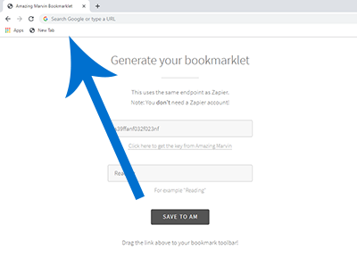
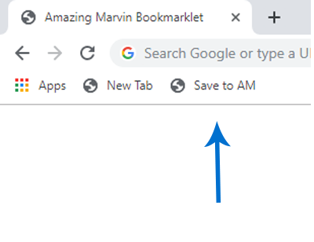
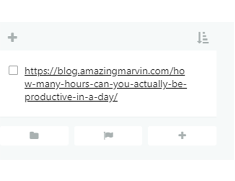

Generate your bookmarklet
This uses the same endpoint as Zapier.
Note: You don't need a Zapier account!
Changelog
1.0 - 2019-07-22
* Website titles are now included in the created task
* You can now add labels to your tasks
* You can now select whether tasks should be scheduled for today or not
* Minor text improvements on website
* Internet Explorer 11 is no longer supported
* Better error handling
* Bookmarklet now communicates directly with Marvin servers
0.1 - 2019-07-14
* Initial release
How to add the bookmarklet

Add the bookmarklet
Drag the "Save to AM" button to your web browser bookmarks toolbar.

Save links
Press the toolbar on any website to save it to Marvin.

Read it
Your link will show up in the folder you specified when configuring the bookmarklet.